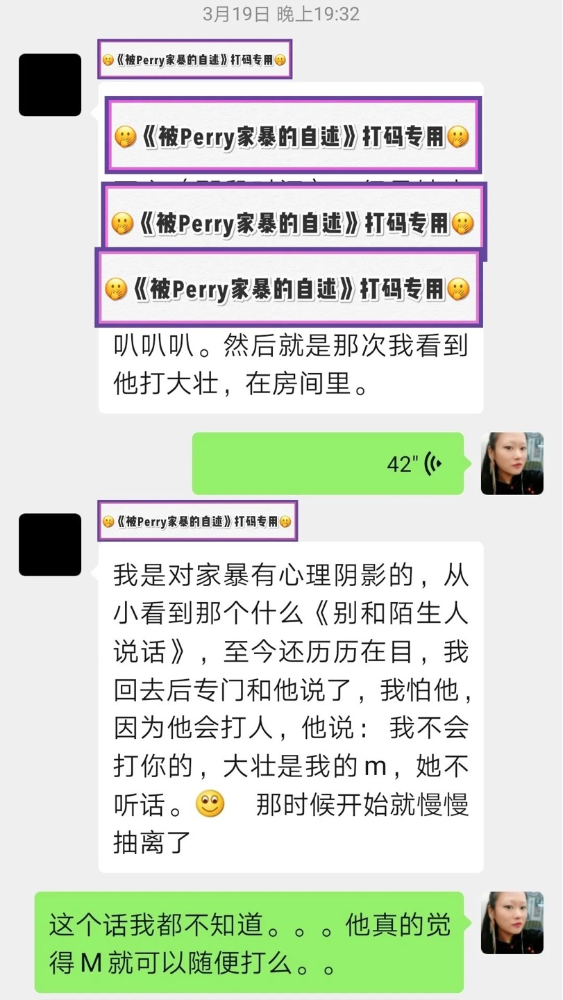

幸存者自述：我被跨性别导演Perry家暴的经历
壮壮姐姐
使女的证言
2022-01-24 18:37

在第三次家暴之后，我开始不停的做噩梦，当时宇芽的事情刚爆出来，Perry提出要一起看宇芽的视频，TA说TA想了解家暴相关的事。我们坐在沙发上看宇芽的视频，看完之后TA说，“你看我也没那么暴力，我还可以现在陪你一起看这个视频......”
前言
作为家暴事件中的受害者，我在当下忍受了肢体上以及精神上的摧残，但TA依然没有反思，只是不停地告诉我TA对我做的事情没那么可怕。所以我决定讲出我自己的故事，提醒更多人不要重蹈覆辙。
TA对我进行了三次肢体暴力和关系内强奸，以及无数次精神暴力（包括自残、疲劳审讯......）
第一次肢体暴力
TA用枕头砸我，我用后背挡的。然后TA就摔门出去了，但是TA走到半路，还没有回到房间就又折回来了，推开门上来就把我猝不及防的推倒。用枕头非常大力的砸我，一次又一次，嘴里一直在咆哮，说什么“都是你” “现在这样你开心了么”诸如此类的话。
第二次肢体暴力
Perry冲过来打了我至少2个巴掌，再多的我记不清了，当时整个人头都是懵的，他太用力以至于我眼睛有段时间看不到了。脸上有很清晰的3个指头的印记，左右脸都有，并且事后在我眼睛里发现了我被打掉的美瞳。隔天我下巴开始痛，这种疼痛大概持续了一个星期
第三次肢体暴力
我们在沙发前起了争执，TA把我面前的桌子掀翻了，桌子上的咖啡杯砸到我眼镜上，里面的可乐全洒在我脸上了。事后，我鼻梁很痛。我要洗脸，TA说不可以，就冲着我吐口水。我强烈表示我要去洗脸！TA说“不行”并且用手掐着我的脖子微微用力。我非常恐惧，我和TA商量想要去洗脸，TA不让。然后又疯狂的快速的朝我脸上吐了非常多次口水，我不敢挣扎，因为TA掐着我脖子。
上面这三次肢体暴力都是事实
我愿意为我说出的话负责
↓↓↓长文预警↓↓↓
详细讲述这三次肢体暴力
人物
大壮：也就是当事人，我
Perry：施暴者，一名跨性别女性导演，大壮的前任开放式关系伴侣、大壮的前任『安全、理智、知情同意』关系伴侣
第一次家暴
时间
2019年5月26日
旁观者
A君（开放式关系中Perry的另外一个女友）
时间靠近中午，A君要赶回程的火车。
当时Perry去灌chang（下面表述为观唱），我说不要直接把花洒拧下来用，怕不卫生，万一螺口生锈什么的，灌到身体里不好。Perry就生气了，TA觉得我在催TA，TA当下很暴躁，TA觉得我并不能马上提供一种更合适的观唱方式，但是却要嫌TA的方式不好，所以很暴躁。具体TA怎么骂我，说实话时间隔了太久，我真的记不清了，我就记得我当时很委屈，就一个人跑到小客房哭了。
Perry 观唱结束之后，A君让TA来找我道歉，A君觉得Perry说的某些话太重了，会让我不好受。Perry到小客房找到我，象征性的和我道歉，但我仍然在哭。然后TA就突然变脸，说时间都被我浪费了，这一切都是我弄砸了。
当时Perry会急匆匆去观唱是因为TA想让A君用手指肛jiao TA。但是Perry 观唱结束之后A君却让TA来安慰我。所以Perry非常不耐烦，TA并不是真的想和我道歉。而是想赶紧安抚了我之后，去和A君为爱鼓掌。
TA到房间里安慰了我一小下，但是没有成功，于是就很生气，我当时坐在床上，TA用枕头砸我，我用我的背挡的。然后TA就摔门出去了，回到大客房。但是TA走到半路，还没有回到房间就又折回来了，推开门上来就把我猝不及防的推倒。用枕头非常大力的砸我，一次又一次，嘴里一直在咆哮，说什么“都是你”、“现在这样你开心了么”诸如此类的话。
自认为并没有做错什么，整件事情就是Perry一心想着和A君互动然后迁怒到我身上，我被Perry骂到委屈不但没有被理会，还被怪罪浪费了TA的时间，整件事情里面只有Perry的需求最重要，TA只想着TA的需求没被满足，甚至不觉得需要和我道歉，而且没被满足的不满还透过暴力发泄在我身上。
“那次我看到TA打大壮，在房间里。我是对家暴有心理阴影的，从小看到那个什么《别和陌生人说话》至今还历历在目，我回去后专门和TA说了，我怕TA，因为TA会打人，TA说： ‘我不会打你的，大壮是我的m，她不听话。’”
——A君

第二次家暴
时间
2019年10月18日
旁观者
H (绳师) 大天使 (绳模) LOKI (大壮的现任)
当时大别墅这边办艺术展，我们邀请了H绳师和她的搭档大天使来做绳艺表演。
因为H和我们是好朋友，当天表演结束后，我和H在表演的场地上玩绳子，同时还有很多人在玩。还有一部分平时生活作息比较早的，要在大别墅过夜的客人，看过表演之后就上去打算休息了。
家暴发生的时候，H刚刚把我从吊缚的状态中解下来，连绳子都没有完全拆掉。
Perry冲过来打了我至少2个巴掌，再多的我记不清了，当时整个人头都是懵的。TA当时第一下巴掌下来的时候，甚至打到了H，那个力道把H以及周围的人都吓到了。当时我整个人头非常懵，有一段时间眼前是看不到的。
我懵的状态，以及当时大别墅客人非常多，我也不想大家累了一天之后再闹不愉快。所以当下并没有讲出来。当时周围的人也都是『安全、理智、知情同意』圈子里的，大家以为这是我和Perry关系中的情欲互动。
但我要说明，当时是TA直接冲过来，我和Perry之间并没有情欲的气氛和状态。当下如果周围的人以为那是我们之间的情欲互动，那我得特意澄清，TA冲过来打我这件事，并不是关系间的互动，而是当下TA有TA的情绪需要发泄，而TA正好利用了我们有『安全、理智、知情同意』关系这件事来让TA的行为看起来合理。
我觉得很过分也需要被强调的事是，TA在那样的场合使用了我们台面上有的关系，来发泄自己的私欲，而TA呼我巴掌的那些行为，就是实实在在的暴力！！而且还把我弄伤了，这个跟关系完全无关，甚至完全违背了安全、理性、知情同意的原则，这就是某关系跟暴力的不同之处，躲在关系里实行真正的暴力，是最可耻的！
10月18日晚到10月19日凌晨，Perry那天比我休息的早，我还要顾第二天的艺术展来的人员名单。我休息之前洗漱、卸妆，LOKI看到我脸上的印记，就是很清晰的3个指头，食指中指无名指，左右脸都有，所以我说TA至少打了两下，不然不会有两个印记，TA后来打的我真的记不清，我整个脑袋“嗡嗡嗡”的响。
TA打完我的当下，我找不到我的美瞳了，我以为美瞳被打掉了，我还在地毯上找了很久。当时周围的朋友都知道我找美瞳这件事。结果卸妆的时候发现了，就在我眼睛里面比较深的地方。我当时超级害怕，居然在我眼睛里发现了我被打掉的美瞳。这个事情LOKI可以给我作证，TA看着我把美瞳从我眼睛深处夹出来的。
隔天我下巴开始痛，这种疼痛大概持续了一个星期，当时因为艺术展的事情太忙，就没有顾上去医院。
第三次家暴
时间
2019年11月3日下午3:00
无旁观者
我们约好和帮朋友拍视频，我是演员，Perry是灯光师。
前一天晚上要睡觉的时候，Perry问我办展的事情TA有没有做的不好的地方，我就说了，然后TA就突然很丧，本来约好晚上洗碗的，所以也没洗。我也确实不想一个人洗。
第二天，Perry一直在床上，我比较心急就说了几句，后来我说，你如果不想去我就先走了，Perry就火了，就说我把情绪发泄到TA身上了。
后来因为确实承诺了对方要去帮忙，Perry还是爬起来了，当时我坐在沙发上等TA。我们在沙发前起了争执，TA非常愤怒，就把我面前的桌子掀翻了，桌子上的所有瓷杯子里面的饮料全撒在我身上，我印象中有可乐，爆米花…其中一个瓷制咖啡杯砸到我眼镜上，peng的一声，里面的可乐全洒在我脸上了，顺着脖子流下去。也清晰的听到瓷制咖啡杯落地碎了的声音。事后，我鼻梁很痛。
因为还要出镜，我说我要洗个脸，TA说不可以，然后走到我面前，恶狠狠的瞪了我一会儿，突然就冲着我吐口水，口水吐到我眼镜片上，就像一口痰挂在镜片上，非常浓稠，缓慢流下去之后还会有痕迹。接着又往我脸上吐了几次口水，额头，鼻子，脸颊…
我强烈表示我要去洗脸！TA很平静的说“不行”并且用手掐着我的脖子微微用力，大拇指在一侧，食指和中指在另外一侧。我非常恐惧，这时候已经不是恐惧TA吐口水，而是害怕TA掐死我。TA 179cm的身高75kg的体重，还有TA手臂上发达的肌肉量都在和我说只要TA想，TA就能够掐死我。
我尝试着用商量的口吻说“等一下我还要出镜，你让我去洗个脸吧”TA说不行，然后又疯狂的快速的朝我脸上吐了非常多次口水，这个时候我的眼镜片都挡不住TA的口水了，我闭上了眼睛。我放弃了挣扎，也确实不敢挣扎。我强迫自己的思绪抽离出我的身体。
过了一会儿TA好像冷静下来了，掐着我脖子的手慢慢放下来了。我还是不敢去洗脸，先用卫生纸擦掉大部分液体，然后又用湿巾擦了一遍，这是个我打的车就到了，司机给我打电话。我从来没有这么感谢司机的电话，我觉得那天是这个司机的电话解救了我。
从这次事件过后，我就开始做噩梦了，总梦到被Perry掐死。
我实在搞不懂TA的行为逻辑。前一天晚上TA问我办展的事有没有做不好的地方，我如实说了→没有满足TA的需求（从TA突然很丧这点来看）→隔天生气→起了争执后对我施暴，而且这次施暴TA依然不觉得需要对我道歉。因为TA一直和我强调TA没有对我动手，TA只是掀了桌子，并且连掀桌子的角度都是计算过的。
2019年11月6日我们拍完东西回了大别墅之后，那天饮料撒在地上的污渍还是我打扫的，清楚的记得当时TA坐在吧台桌那边和A君打电话，当时我很不爽，凭什么TA在给TA的另一个女朋友打电话，而我却在打扫TA家暴我的痕迹？我有些生气，TA还觉得我莫名其妙生气。
↑↑请看红色标识部分↑↑
丝毫不觉得自己真的做错，抱歉非常敷衍
最后大壮想说
童年在原生家庭见了太多的暴力，所以喜欢瘦弱的阴柔的人，也和一名跨性别女性有了一段情感经历。一年的时间让我认识到，暴力从来都不是人群的问题，而是这个人的问题。
我在身体上、精神上受到了严重的摧残，尤其是一直做噩梦，即便Perry不在我身边也不敢去睡觉，因为梦里会遇到这个施暴者。
Perry在家暴之后依然没有反思，象征性的说了抱歉或是对不起之后，告诉我TA对我做的事情没那么可怕。在TA用跨性别身份接受各家媒体美好和正能量的采访之后，我看不下去了，其中一家媒体对Perry采取了撤稿措施，Perry这才说会给我写道歉信。在道歉信里，我认为TA避重就轻，我不去猜想TA刻意掩盖不愿承认TA做过的过分的事。
假设是施暴者不记得，TA可能会说“我怎么不记得，我怎么不记得用枕头砸过她，我怎么不记得我掐过她脖子...”TA之后的日子舒舒坦坦，没有一点心理负担，多少年之后回首自己的人生，觉得自己挺好的了，觉得自己没有做过什么伤天害理的事。太恶心了，实在是太恶心了！！
如果我永远忘不掉，你一次又一次对我动手，被枕头砸，被扇耳光，从眼睛深处夹出隐形眼镜是什么滋味、化妆的时候想办法遮掉被家暴的痕迹是什么滋味、被杯子砸到眼镜上、被掐着脖子吐口水是什么滋味...日复一日的梦魇是什么滋味。
如果我永远忘不掉，你也别想忘掉。
感谢大家愿意看到这里
在上海的小伙伴可以来大别墅坐坐，大壮可以带你们参观家暴场景。在这么大的房间里，到处都是Perry生活过的痕迹，一想起这个人我就不敢睡觉。
身体上的伤痛总归是会好的，法治社会也比较少见会造成受害者不可逆转的身体伤痛。
精神暴力才是最可怕的，那是一种长时间的不认可、贬低、谴责、控制，导致我现在梦魇不断。我不知道我要多久才能摆脱这件事。
下一篇我会详细阐述Perry对我的精神暴力，在我和Perry的整个关系当中，精神暴力数不胜数。

文学是最徒劳的，且是滑稽的徒劳。写这么多，我不能拯救任何人，甚至不能拯救自己。这么多年，我写这么多，我还不如拿把刀冲进去杀了他。真的。我每天写八个小时，写的过程中痛苦不堪，泪流满面。写完以后再看，最可怕的就是：我所写的、最可怕的事，竟然是真实发生过的事。而我能做的只有写。女孩子被伤害了。女孩子在读者读到这段对话的当下也正在被伤害。而恶人还高高挂在招牌上。我恨透了自己只会写字。
——《房思琪的初恋乐园》